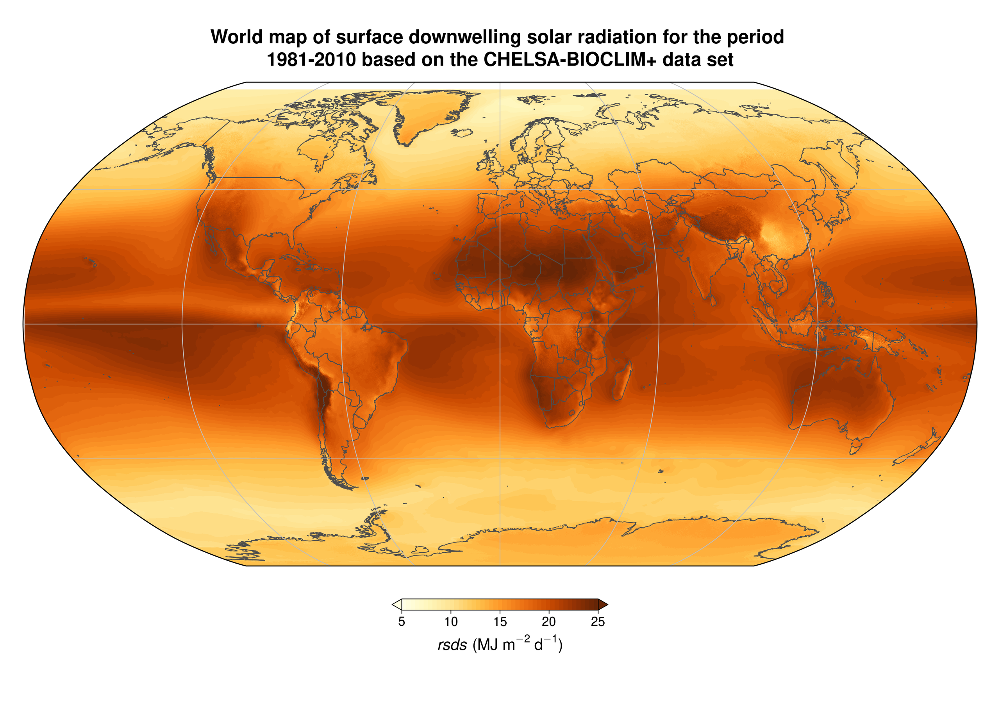
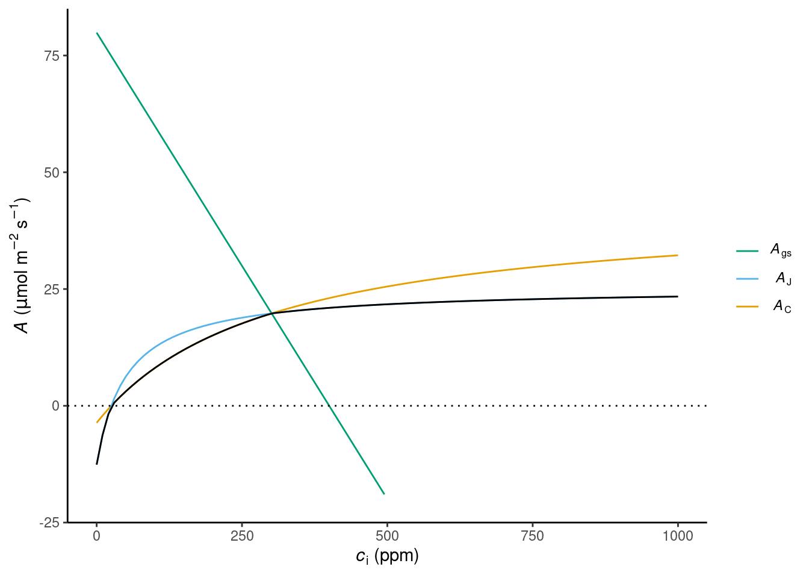
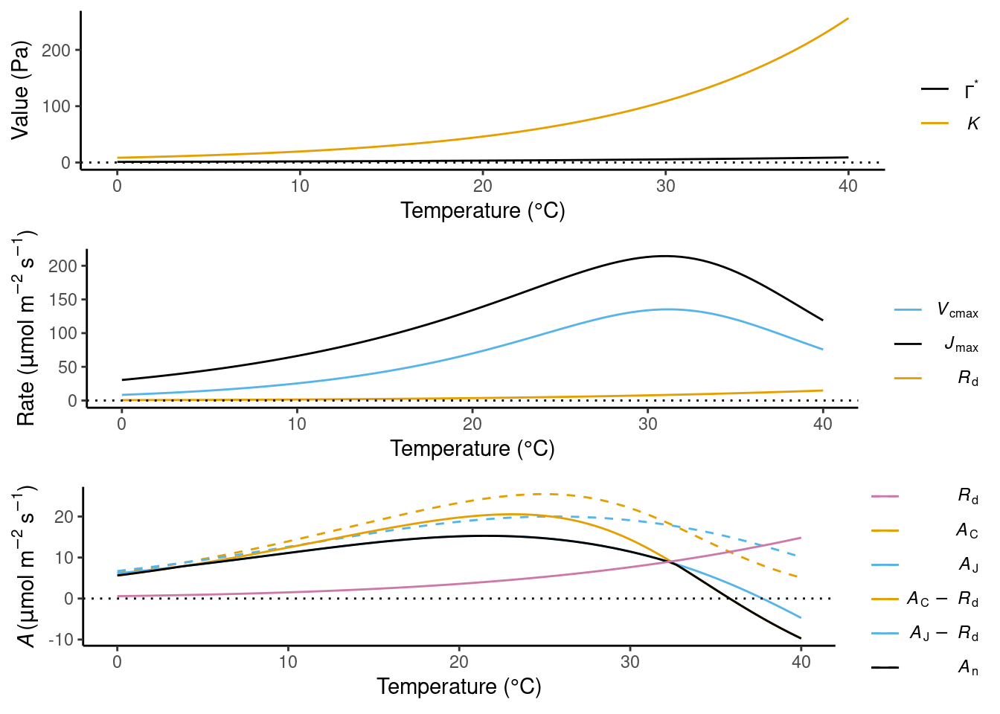

4 Ecosystem carbon fluxes and global patterns
In Chapter 3, we conceived the global carbon cycle as a system of three pools (atmosphere, land, ocean), emissions as fluxes into the system (added to the atmosphere). and fluxes between the pools. The C dynamics in the land biosphere were modeled using a 1-box model which receives C inputs through photosynthesis and loses C through a constant turnover. In this chapter, we are un-boxing this model to better understand the input flux through photosynthesis in Section 4.1 and the C dynamics and fluxes at the level of an ecosystem in Section 4.2. This un-boxing is essential for understanding global patterns in Section 4.3.
4.1 Photosynthesis
4.1.1 Light use efficiency model
Monteith (1972) made the observation that the biomass productivity of a given (well-watered) crop (in the tropics) scales linearly with the amount of absorbed solar radiation, integrated over weeks to months. This observation underlies the general light use efficiency (LUE) model which describes ecosystem-level apparent photosynthesis (referred to as gross primary production, GPP) as the photosynthetic photon flux density (PPFD) and the efficiency at which photons are used for assimilating C (LUE). \[ \mathrm{GPP} = \mathrm{PPFD} \cdot \mathrm{fAPAR} \cdot \mathrm{LUE} \tag{4.1}\] PPFD is the same as the also commonly used photosynthetically active radiation (PAR), but is expressed in moles of photons instead of energy units.
Of course, a relationship with biomass productivity, as observed by Monteith (1972) should not be equated with a relationship with GPP. However, again, over longer periods of time, a given plant converts assimilated carbon into biomass at a relatively constant rate (see Section 4.2.1). Therefore, the observation by Monteith (1972) is instructive for our understanding. Indeed, models of terrestrial GPP are often formulated in the form of Equation 4.1 and are useful for estimating how GPP values over space and time (at the scale of weeks to months). The aspect that the observations by Monteith (1972) were made under well-watered conditions is a further caveat. However, it shall serve us in this chapter as we are - for now - ignoring the effects by limited root-zone water availability. We will relieve this simplification in Chapter 7 and Chapter 8.
The linear dependence of GPP on PPFD implies that the variations of solar radiation over the seasons and across latitude directly translate to how GPP varies across these scales. This will be further described in Section 4.3. Note that at shorter time scales, GPP is no longer linearly related to PAR.
In the following, we delve deeper into each of the three factors of Equation 4.1. Brace yourself. This will take us from the Earth’s orbit in space to the scale of a cell where photosynthetic CO2 assimilation happens.
4.1.2 Solar radiation
PPFD is a fraction of the solar radiation at the top of the atmosphere (\(I_\mathrm{TOA}\)). This fraction depends on the planetary albedo for visible light (\(\alpha_v\), unitless), an atmospheric attenuation factor (\(\tau\), unitless) that accounts for the elevation (\(z\))-dependent path length of a light ray travelling through the atmosphere and a factor that accounts for cloud cover \(f_c\). A further reduction by about 50% arises because photosynthesis uses only a range of the spectrum of wavelengths of solar radiation, corresponding to the visible light spectrum. The factor \(f_{p}\) accounts for this and for the conversion of \(I_\mathrm{TOA}\), expressed as an energy flux in W m-2, to a flux of photons in mol s-1 m-2. \[ \mathrm{PPFD} = (1-\alpha_{v})\; \tau(z, f_c) \; f_{p} \; I_\mathrm{TOA} \tag{4.2}\]
Solar radiation across the full short-wave spectrum emitted by the sun and incident at the land surface (top-of-canopy, \(I_\mathrm{0}\)) is similarly related to \(I_\mathrm{TOA}\). A different albedo applies for total short-wave radiation vs. the radiation in the photosynthetically active (and visible) spectrum. \(I_\mathrm{0}\) is commonly expressed in energy units (W m-2). \[ I_\mathrm{0} = (1-\alpha_\mathrm{sw})\; \tau(z, f_c) \; I_\mathrm{TOA} \tag{4.3}\]
{kind=link}
4.1.2.1 Solar geometry
Let’s first step outside the atmosphere and focus on the solar geometry to understand \(I_\mathrm{TOA}\). Solar geometry describes the cyclical movement of the Earth around the sun and how the resulting cyclically varying amount of solar energy that reaches the Earth. The top-of-the atmosphere perspective is relevant to separate atmospheric effects from planetary effects.
\(I_\mathrm{TOA}\) scales in proportion with the solar constant \(I_S\) (1360.8 W m-2) and is inversely proportional to the square of the distance between the Earth and the sun (\(r_E\)). \[ I_\mathrm{TOA} = I_S r_E^{-2} \cos \theta_z \tag{4.4}\] \(\theta_z\) is the solar zenith angle. The term \(\cos \theta_z\) accounts for the dependence of the solar radiation on the angle at which the sun’s rays reach the Earth surface (no terrain considered). It varies cyclically over the course of a day (with hour-of-day) and over the course of a year (with day-of-year). The zenith angle is zero when the sun is directly above the observer - in the zenith (Figure 4.2). At this point, the intensity of the solar radiation is at its maximum.
Note that \(r_E\) is not constant over the course of a year as the Earth rotates around the sun not following a perfect circle but an ellipse.

The dependence of the solar zenith angle on the hour-of-day, day-of-year, and the latitude is described by \[ \cos \theta_z = \sin \varphi \sin \delta +\cos \varphi \cos \delta \cos h \tag{4.5}\]
- \(\varphi\) is the local latitude in radians (0 at the equator, \(\pi/2\) at the poles)
- \(\delta\) is the solar declination angle. It accounts for the tilt of the Earth relative to the plane in which it moves around the sun. It varies with the day-of-year (\(23.5^\circ \pi/180\) on the northern-hemispheric summer solstice, June 21, and \(-23.5^\circ \pi/180\) on the northern-hemispheric winter solstice, December 21)
- \(h\) is the solar hour angle. It varies with the hour-of-day (0 at solar noon, \(\pi\) at “solar midnight”, \(\pi/12\) at 1 hour after solar noon).
A derivation of Equation 4.5 is given on Wikipedia.
4.1.2.2 Variations in solar radiation
Variations in the solar zenith angle, as expressed through Equation 4.5, are shown for different latitudes and a mid-summer diurnal cycle in Figure 4.3.
Code
library(ggplot2)
library(cowplot)
library(dplyr)
library(tidyr)
calc_cos_zenith_angle <- function(
lat, # latitude in degrees
doy, # day of year (1-365)
hod # hour of day (0-24, 12 is solar noon)
){
doy_summer_solstice <- 173 # day-of-year of summer solstice (21 Jun)
decl <- 23.5 * cos((doy - doy_summer_solstice) / 365 * 2 * pi) * pi/180
phi <- lat * pi / 180 # latitude in radians
hour_angle <- (hod - 12) / 24 * 2 * pi
cos_zenith_angle <- sin(phi) * sin(decl) + cos(phi) * cos(decl) * cos(hour_angle)
# limit to zero - sun disappears behind the horizon
cos_zenith_angle <- ifelse(cos_zenith_angle < 0, 0, cos_zenith_angle)
return(cos_zenith_angle)
}
# Solar azimuth -------
# at NH summer solstice (doy = 173)
ggplot() +
# at equator
geom_function(
aes(color = "Equator"),
fun = calc_cos_zenith_angle,
args = list(
lat = 0,
doy = 173
)) +
# at tropic (lat = 23.5)
geom_function(
aes(color = "23.5° N"),
fun = calc_cos_zenith_angle,
args = list(
lat = 23.5,
doy = 173
)) +
# at polar (lat = 66.5)
geom_function(
aes(color = "66.5° N"),
fun = calc_cos_zenith_angle,
args = list(
lat = 66.5,
doy = 173
)) +
# at north pole
geom_function(
aes(color = "North pole"),
fun = calc_cos_zenith_angle,
args = list(
lat = 90,
doy = 173
)) +
xlim(0, 24) +
geom_vline(xintercept = 12, linetype = "dotted") +
scale_color_viridis_d(
breaks = c("Equator", "23.5° N", "66.5° N", "North pole"),
name = ""
) +
labs(title = "Cosine of solar zenith angle",
subtitle = "Summer solstice (21 June)",
x = "Hour of day",
y = "") +
theme_classic()The areas under the curves in Figure 4.3 are proportional to the daily total solar radiation. Calculating daily totals involves a few integrals. The derivation is not shown here, but is explained in Davis et al. (2017). Daily totals and their variation over the seasons are shown below in Figure 4.4 and Figure 4.5.
Code
# use function calc_daily_solar() from Davis et al., 2017 GMD
source(here::here("R/solar.R"))
# Daily total and daytime-average S_TOA ---------------------
# for 4 different latitudes
df <- tibble(doy = seq(365)) |>
rowwise() |>
mutate(s_toa = calc_daily_solar(0, doy)$ra_j.m2,
dayl = calc_daily_solar(0, doy)$hs_deg * 24.0 * 60 * 60 / 180,
lat = 0
) |>
bind_rows(
tibble(doy = seq(365)) |>
rowwise() |>
mutate(s_toa = calc_daily_solar(23.5, doy)$ra_j.m2,
dayl = calc_daily_solar(23.5, doy)$hs_deg * 24.0 * 60 * 60 / 180,
lat = 23.5
)
) |>
bind_rows(
tibble(doy = seq(365)) |>
rowwise() |>
mutate(s_toa = calc_daily_solar(66.5, doy)$ra_j.m2,
dayl = calc_daily_solar(66.5, doy)$hs_deg * 24.0 * 60 * 60 / 180,
lat = 66.5
)
) |>
bind_rows(
tibble(doy = seq(365)) |>
rowwise() |>
mutate(s_toa = calc_daily_solar(90, doy)$ra_j.m2,
dayl = calc_daily_solar(90, doy)$hs_deg * 24.0 * 60 * 60 / 180,
lat = 90
)
) |>
mutate(s_toa_daily_avg = s_toa / dayl)
df |>
rename(`Daily total` = s_toa, `Daytime mean` = s_toa_daily_avg) |>
pivot_longer(c("Daily total", "Daytime mean"), values_to = "s_", names_to = "var") |>
ggplot(aes(doy, s_, color = as.factor(lat))) +
geom_line() +
geom_vline(xintercept = 173, linetype = "dotted") +
scale_color_viridis_d(
labels = c("Equator", "23.5° N", "66.5° N", "North pole"),
name = ""
) +
labs(title = "Top-of-atmosphere solar radiation",
x = "Day of year",
y = expression(paste("Radiative energy flux (J m"^-2, ")"))) +
theme_classic() +
facet_wrap(vars(var),
scales = "free") +
theme(
strip.background = element_rect(fill = "grey", color = NA),
strip.text = element_text(color = "black", size = 10, hjust = 0)
)Code
# all combinations of day-of-year and latitude
df <- expand.grid(
doy = seq(1, 365, by = 2),
lat = seq(-90, 90, by = 2)
) |>
rowwise() |>
mutate(s_toa = calc_daily_solar(lat, doy)$ra_j.m2)
df |>
ggplot(aes(x = doy,
y = lat,
fill = s_toa)) +
geom_raster() +
scale_fill_viridis_c(option = "magma") +
coord_fixed(ratio = 1.2) +
labs(title = "Top-of-atmosphere solar radiation",
subtitle = "Daily total, year 2000",
x = "Day of year",
y = "Latitude (°N)",
fill = expression(paste("J m"^-2))) +
scale_x_continuous(expand = c(0,0)) +
scale_y_continuous(expand = c(0,0))The diurnal (over the course of a day) and seasonal patterns in top-of-atmosphere solar radiation, following from solar geometry and expressed through Equation 4.5, have direct consequences for CO2 uptake patterns, as expressed through Equation 4.1, Equation 4.2, and Equation 4.4 and described further in Section 4.3.
Some features are particularly noteworthy about the patterns in \(I_\mathrm{TOA}\):
- The diurnal variation of the instantaneous flux is largest in the tropics.
- The seasonal variation of the daily total flux is largest at the north pole.
- At the summer solstice, the daily total solar radiation is largest at the north pole, …
- … but the daily maximum instantaneous and the daytime mean radiation flux are lower at the north pole than at the equator at the summer solstice.
The biology of plants is attuned to the solar radiation patterns across different latitudes. The photosynthetic apparatus is constructed to make best use of the light, even during the hours of peak light intensity at mid-day. The phenological phases of plant growth reflect the light distribution over the seasons - evergreen plants dominate in the moist tropics to make use of the light year-round, while deciduous leaf strategies and annual life history strategies dominate in the northern latitudes where the seasonal fluctuation of light is large.
4.1.2.3 Long-term variations in solar radiation
Solar irradiance
The solar constant \(I_S\) isn’t actually constant but varies on the order of 0.1% of the course of a solar cycle. One cycle is approximately 11 years. The cyclic behavior is related to the periodic flip of the sun’s magnetic field and the number of sunspots. The radiation emitted from the sun and the number of sunspots are at their minimum after a magnetic flip. There is also a small long-term trend in the solar radiation, having increased by <0.1% since the Maunder Minimum (1645–1715). Solar irradiance is measured at high altitude to minimize the influence of the atmosphere (\(\tau\) in Eq. Equation 4.2) and get information about how \(I_S\) varies. Reconstructions of solar irradiance changes for the pre-instrumental period are based on the relationship between \(I_S\) and the (easily observable) sunspot number. Variations in \(I_S\) are small and do not have a dominant effect on climate and the carbon cycle that would override other forcings, especially for the industrial period (IPCC 2021).
Volcanic activity
Volcanic eruptions can influence the solar radiation at the Earth surface. Events that reduce solar radiation by more than 1 W m-2 occur approximately every 35-40 years (Gulev et al. 2021) and affect climate and the carbon cycle for up to a few years after very large eruptions. The increased aerosol load in the atmosphere reduces the total radiative energy flux (reducing \(\tau\) in Eq. Equation 4.2). However, through the strong positive effect of the aerosol load on the share of diffuse versus direct radiation, volcanic aerosols can affect the terrestrial carbon cycle, (somehow surprisingly) leading to a greater land C sink following years of large volcanic eruptions (Section 4.1.3).
Orbital parameters
The largest changes in \(I_\mathrm{TOA}\) arise over millennial time scales and are related to variations in Earth’s orbit around the sun. These Milankovic cycles are the trigger for the large climate swings between ice ages and warm periods over the course of ~100,000 years. Variations in the orbital parameters affect the latitudinal and seasonal distribution of \(I_\mathrm{TOA}\). Orbital parameters that vary periodically are:
- The eccentricity of the Earth’s elliptical orbit which affects the distance between the Earth and the sun, affecting \(I_\mathrm{TOA}\) via \(r_E\) in Equation 4.4. It varies with a period of approximately 100,000 years.
- The obliquity - the tilt of the axis of the Earth’s own rotation relative to the plane in which the Earth rotates around the sun. A greater obliquity amplifies seasonal variations in \(I_\mathrm{TOA}\). The obliquity is currently at 23.44°. At its minimum, it’s at 21.1°. Obliquity varies over 41,000 years.
- The precession is the rotation of the Earth’s own rotation axis itself. The effect of precession, in combination with the fact that the Earth’s orbit is elliptical, is that the variation of the sun-Earth distance shifts over the seasons. It varies with a period of about 25,700 years.
The point of minimal distance coinciding with the summer solstice leads to the largest mid-summer radiation maximum. As a result, the incident solar radiation over the northern-hemispheric summer at 65°N varied by about 83 W m-2 during the past million years. These changes are much larger than the ones driven by solar irradiance and volcanic activity.
About 6000 years ago, during the Mid-Holocene Warm Period, a summer maximum insolation for the northern hemisphere was reached (Figure 4.6). During this period, temperatures and solar irradiance during the growing season were elevated relative to the pre-industrial period and precipitation patterns shifted. This had profound effects on vegetation and the carbon cycle. Testimony to this change are reconstructions that document a “Green Sahara” and a northward shift temperate and boreal forest biomes (MacDonald et al. 2000; Prentice, Jolly, and Participants 2000) during this period.
Code
# test:
# tmp <- purrr::map(seq(from = -300000, to = 2000, by = 500),
# ~calc_daily_solar(65, 173, year = .)) |>
# purrr::map_dbl("ra_j.m2")
# all combinations of day-of-year and latitude
df_holo <- expand.grid(
doy = seq(1, 365, by = 2),
lat = seq(-90, 90, by = 2)
) |>
rowwise() |>
mutate(s_toa_holo = calc_daily_solar(lat, doy, year = -4000)$ra_j.m2) |>
left_join(
df,
by = c("doy", "lat")
) |>
mutate(diff = (s_toa_holo - s_toa))
df_holo |>
ggplot(aes(x = doy,
y = lat,
fill = diff)) +
geom_raster() +
khroma::scale_fill_roma(reverse = TRUE) +
geom_vline(xintercept = 173, linetype = "dotted") +
coord_fixed(ratio = 1.2) +
labs(title = "Mid-Holocene top-of-atmosphere solar radiation anomaly",
subtitle = expression(paste("Daily total, ", italic(I)[TOA], "(6 kyr BP) - ", italic(I)[TOA], "(present)" )),
x = "Day of year",
y = "Latitude (°N)",
fill = expression(paste("J m"^-2))) +
scale_x_continuous(expand = c(0,0)) +
scale_y_continuous(expand = c(0,0))4.1.3 Canopy light absorption
The fraction of absorbed photosynthetically active radiation (fAPAR) increases with the projected (one-sided) surface area of leaves per unit ground area (the leaf area index, LAI). Note that the total surface area of leaves is roughly twice the projected surface area. The LAI is an ecosystem-level variable and reflects the leaf area density of the whole canopy which may be composed of multiple species and organised in multiple canopy layers. While temperate and boreal forests may form a single understorey and attain LAI values of 4-6 m2 m-1, tropical moist forests may have multiple canopy layers and an LAI of over 6 m2 m-1 (Figure 2.15).
While the intensity of shortwave (solar) radiation is highest at the top of the canopy, it is progressively attenuated as it penetrates into the canopy. Radiation gets reflected, absorbed and transmitted by individual leaves. Each of these processes affects light differently in different wavelengths, depends on the solar zenith angle, on the three-dimensional arrangement of leaves in the canopy (angles, “clumping”), and on the pigments on the leaf surfaces that are responsible for light absorption. Pigments change across species and may vary in response to stress (e.g., by frost, heat, or water limitation).
In brief, canopy radiative transfer is complex. A simple model of radiation extinction is given by the Beer-Lambert law. To apply it for radiative transfer in the canopy, we assume that a leaf only absorbs light, but does not reflect or transmit it. Following this model, the light extinction at canopy depth \(z\) (measuring from the top) is proportional to the light intensity at that depth and an “optical density” \(\mu\). \[ \frac{\mathrm{d}I}{\mathrm{d}z} = -\mu\;I(z) \] We further assume that the canopy is a homogenous turbid medium. In other words, we assume that leaves are uniformly distributed across the canopy and that the optical density is given by the leaf area index \(L\) divided by the total canopy depth \(z_0\): \[ \mu = k \frac{L}{z_0} \] \(k\) is the leaf area-specific optical density, or light extinction coefficient. Therefore, the radiation intensity at the bottom of the canopy (\(z_0\)) is: \[ I(z_0) = I_0 \; e^{-kL}\;, \] and the fraction of absorbed (photosynthetically active) radiation is \[ \mathrm{fAPAR} = 1 - e^{-kL}\;. \] A typical value of the light extinction coefficient \(k\) in the visible (photosynthetically active) wavelength spectrum is 0.5.
The radiation \(I\) consists of direct radiation from the sun and diffuse radiation from the sky and from radiation scattered within the canopy. This distinction is relevant for understanding radiation absorption by the canopy and canopy-level photosynthesis. Two important implications are the following. First, diffuse radiation is more effectively absorbed by canopies, particularly at low LAI. The reduction of GPP under cloudy conditions is therefore less than what would be expected from considering only changes in \(I_0\) (the effective \(k\) is higher for diffuse radiation than for direct radiation).
Second, the energy flux of direct radiation is much higher than that of diffuse radiation. Although at greater canopy depths, leaves are more frequently exposed to diffuse than to direct radiation, the latter provides potentially valuable energy for photosynthesis, but occurs very rarely (sunflecks). Leaves have to balance the rare high-intensity light levels and the frequent low-intensity levels for adjusting photosynthetic capacities.
4.1.4 Light use efficiency and photosynthesis
The effiency at which absorbed photons (radiation) are converted into C in the form of sugars depends on the conductance to CO2 uptake by the leaf and on the activity of the photosynthetic machinery. CO2 uptake by the leaf happens by diffusion through pores at the leaf surface (stomata, Figure 4.7). The opening of stomata is dynamically regulated in response to environmental conditions (light, CO2, temperature, atmospheric humidity) and controls the conductance to CO2 diffusion. The CO2 uptake flux by diffusive transport through stomata can thus be described by Fick’s law which states that the flux is proportional to the concentration difference of CO2 inside and outside the leaf. \[ A = g_s(c_a - c_i) \tag{4.6}\] \(c_a\) is the ambient CO2 concentration (outside the leaf), and \(c_i\) is the CO2 concentration at the chloroplast. \(g_s\) is the stomatal conductance. Note that we use the variable name \(A\) here for CO2 assimilation by photosynthesis. In constrast to the ecosystem-level variable GPP, \(A\) refers to the leaf-level flux.

Photosynthetic CO2 assimilation leads to a continous depletion of CO2 inside the leaf. Therefore, \(c_i\) reflects photosynthetic rates. This description of \(A\) is specific for plants that follow the C3 photosynthetic pathway - the majority of plants and all trees. Grasses growing in warm climates predominantly follow the C4 photosynthetic pathway (see Section 4.1.7).
Modelling photosynthesis is relatively complex because \(g_s\) depends on \(A\). Equation 4.6 can therefore not be solved in a straight-forward manner. Furthermore, plants coordinate stomatal conductance to balance water losses and C assimilation but the exact relationship varies between species and depends on a multitude of mechanisms and traits related water transport in the plant (Section 4.1.6). Here, let’s start by taking \(g_s\) as given and look at how the assimilation rate \(A\) depends on \(c_i\).
The primary processes are happening in the chloroplasts which are located in the mesophyll cells of leaves. After diffusing across stomata, CO2 diffuses across the mesophyll cell to the chloroplast. The conductance to this diffusion step - mesophyll conductance - is often ignored for modelling photosynthesis. Reflecting this, we are referring to “leaf-internal CO2 concentration, \(c_i\)” here, instead of a more correct CO2 concentration at the chloroplast.
Before returning to a mathematical description of photosynthesis, let’s step back and look at the process of leaf-level photosyntheis. Three steps of the photosynthetic apparatus can be distinguished (based on Lambers, Chapin, and Pons (2008) and Bonan (2015)).
4.1.4.1 Light absorption at the cellular level
Light (photons) in the photosynthetically active wavelength spectrum (400-700 nm) is absorbed by pigments - mainly chlorophyll. The absorbed energy is transported in the form of excited chlorophyll to the reaction centers of photosystem I (PSI) and photosystem II (PSII). Relevant for photosynthesis is the number of photons in the photosynthetically active spectrum, not their total energy. That’s why Equation 4.2 is expressed in units of photons, not energy (Watts). A photon in the blue wavelength has the same effect on CO2 assimilation as a photon in the red wavelength. The excess energy is dissipated as heat or through other pathways.
4.1.4.2 Light reactions
In the reaction centers, the excitation energy is used for splitting electrons from water molecules, producing oxygen (O2) as a “side-product”. The electrons are transported along the electron transport chain and are used to produce NADPH and ATP. These are called the light reactions of photosynthesis. Up to here, radiation energy has been converted into chemical energy in the form of ATP. The production of ATP consumes inorganic phosphate.
4.1.4.3 Calvin cycle
NADPH and ATP are then used for reducing CO2 (the energy-demanding reversal of oxidation) in the Calvin cycle. This step forms C3 compounds (triose-phosphates) and occurs independently of light. It is therefore commonly referred to as the “dark reactions” of photosynthesis. Rubisco (ribulose-1,5-bisphosphate carboxylase/oxygenase) is the principal enzyme involved in the Calvin cycle and the amount of Rubisco determines the capacity for the carboxylation of RuBP (Ribulose-1,5-bisphosphate). Rubisco also catalyzes the oxygenation of RuBP which consumes O2 and produces CO2 as part of photorespiration. This respiration scales with photosynthetic activity and reduces the net photosynthetic CO2 by 30-50%, depending on the relative concentrations of CO2 and O2. At very low CO2 levels, around 30-50 ppm, the photorespiratory compensation point is reached and net photosynthesis is zero. In contrast to photorespiration, dark respiration (\(R_d\)), which also produces CO2, arises from the decarboxylation of Rubisco and is independent of light, but proportional to the amount of Rubisco.
Reduced C in the form of sucrose or (after an additional step) starch is either consumed in the leaf during the night, or exported through the phloem and used for synthesising biomass or supplying plant-internal C storage as non-structural C.
4.1.4.4 Summary
The chemical summary equation of photosynthesis is: \[ n\mathrm{CO}_2 + 2n\mathrm{H}_2\mathrm{O} \rightarrow (\mathrm{CH}_2\mathrm{O})_n + n\mathrm{O}_2 + n\mathrm{H}_2\mathrm{O} \tag{4.7}\] A total of eight photons is consumed to assimilate one molecule of CO2. For each molecule of CO2, one molecule of O2 is produced. And for each molecule of CO2, one molecule of H2O is consumed (net). Note however, that this water consumption is not the primary reason for why plants use water. A much larger amount of water is consumed by the diffusion of water vapour from the water-saturated air inside the leaves out of the stomata. This transpiration flux is further explained in Chapter 7.
4.1.4.5 Response to light and CO2
The three steps described above operate in series and each step is potentially rate-limiting and responds differently to the environment. The rates are coordinated such that they are roughly co-limiting for average environmental conditions to which a leaf is exposed during a day. An imbalance of rates can lead to an excess production of electrons and can cause damage to the photosynthetic apparatus. This happens for example when leaves are exposed to very cold temperatures and high light during a frost event, or when you move your indoor plant that has been sitting in a dark corner for years suddenly into full sunlight outdoors.
The response of photosynthetic CO2 assimilation (\(A\)) to light (PPFD) and leaf-internal CO2 (\(c_i\)) reflects the serial nature of how the light and dark reactions are connected. \(A\) saturates both in response to increasing PPFD as well as to increasing \(c_i\). When a leaf is exposed to increasing PPFD, \(A\) initially increases and eventually saturates (Figure 4.9). The slope of the initial linear increase reflects the efficiency at which photons are used for CO2 assimilation (the quantum yield \(\varphi_0\)). Under these conditions, light, i.e. the rate of the light reactions, are limiting, not CO2. Under conditions of very high light, the dark reactions of the Calvin cycle become limiting. The assimilation rate attained under saturating light is commonly referred to as \(A_\mathrm{max}\).
The level at which the light response of \(A\) saturates varies within a species and across different species. Variations within species arise through the acclimation of the light reaction capacities to the typical light intensities to which a leaf is exposed. Acclimation evolves over time scales of weeks to months (Thus, your indoor plant suffers because the change to high-light conditions happened to fast.). \(A_\mathrm{max}\) also varies across species, reflecting the adaptation through evolution of different species to the environment in which they commonly grow. Typical difference in light adaptation are evident between plants that grow in the shady understorey versus plants that grow in the sun-exposed upper canopy.
In a similar fashion, the response of \(A\) to \(c_i\) initially increase and saturates at high \(c_i\). This is reflected by the so-called “A-ci curve”. Commonly, net assimilation \(A_n=A-R_d\) is considered. \(A_n\) is initially negative until the photorespiratory compensation point (\(\Gamma^\ast\)) is reached. Then, \(A_n\) increases steeply with \(c_i\) as it is limited by the rate of RuBP carboxylation by Rubisco (\(V_\mathrm{cmax}\)). This functional response of assimilation is commonly denoted \(A_C\). As \(c_i\) increases further, \(A\) is no longer limited by RuBP carboxylation, but by the rate at which RuBP becomes available. This, in turn, is governed by the rate at which ATP and NADPH are produced and thus by the rate of electron transport \(J\). This functional response of assimilation is commonly denoted \(A_J\). A limiting electron transport rate may be due to limiting light or a limiting capacity of electron transport (\(J_\mathrm{max}\)). A slower further increase of \(A\) with \(c_i\) in the electron transport-limited range is due to the suppression of RuBP oxygenation at high concentrations of CO2 (relative to O2). The effective assimilation rate across the full range of \(c_i\) is the minimum of the electron transport-limited and the RuBP carboxylation-limited rate: \[ A_n = \min(A_C, A_J) - R_d \]
The A-ci curve (Figure 4.10) can be measured in the field and reveals multiple quantities (\(V_\mathrm{cmax}\), \(J_\mathrm{max}\), \(\Gamma^\ast\), and the “shape parameters” of \(A_C\) and \(A_J\)). These quantities are key for quantitatively describing and modeling leaf photosynthesis. The acclimation and adaptation of \(A_\mathrm{max}\) (Figure 4.9) reflects an acclimation and adaptation of the electron transport capacity and the capacity for RuBP carboxylation. Although acclimation can occur, it is not fast enough to respond to the strongly varying light conditions during a day. Therefore, plants have to tune the capacities of the different photosynthetic reactions such that they are mostly near the co-limitation point.
4.1.5 Farquhar-von Caemmerer-Berry model
Following the Farquhar-von Caemmerer-Berry (FvCB) model for C3 photosynthesis (Farquhar, Caemmerer, and Berry 1980), the RuBP carboxylation-limited assimilation rate \(A_C\) can be described as \[ A_C = V_\mathrm{cmax} \frac{c_i - \Gamma^\ast}{c_i + K} \;, \tag{4.8}\] where \(K\) is the effective Michaelis-Menten coefficient for \(A_C\). It depends, i.a., on the partial pressure of oxygen.
The electron transport-limited assimilation rate \(A_J\) can be described as \[ A_J = \frac{J}{4} \cdot \frac{c_i - \Gamma^\ast}{c_i + 2 \Gamma^\ast} \tag{4.9}\] The electron transport rate \(J\) is described by a saturating function that increases with absorbed light \(I_\mathrm{abs}\) up to a maximum rate \(J_\mathrm{max}\) \[ J = \frac{4\varphi_0 I_\mathrm{abs}}{\sqrt{1+\left(\frac{4\varphi_0 I_\mathrm{abs}}{J_\mathrm{max}}\right)^2}} \tag{4.10}\] Note that the “photosynthesis parameters” \(V_\mathrm{cmax}\), \(J_\mathrm{max}\), \(\Gamma^\ast\), and \(K\) have a strong temperature dependency. The latter two also depend on the partial pressure of O2 and therefore on the atmospheric pressure. These dependencies are described in Stocker et al. (2020).
Code
library(rpmodel)
library(dplyr)
# modified seq() function to get a logarithmically spaced sequence
lseq <- function(from=1, to=100000, length.out=6) {
exp(seq(log(from), log(to), length.out = length.out))
}
# Set model parameters (constants)
# see Stocker et al., 2020 GMD for a description
beta <- 146 # unit cost ratio a/b
c_cost <- 0.41 # marginal cost of Jmax
gamma <- 0.105 # unit cost ratio c/b
kphio <- 0.085 # quantum yield efficiency
c_molmass <- 12.0107 # molar mass, g / mol
# Define environmental conditions
tc <- 15 # temperature, deg C
ppfd <- 500 # micro-mol/m2/s
vpd <- 300 # Pa
co2 <- 400 # ppm
elv <- 0 # m.a.s.l.
fapar <- 1 # fraction
patm <- 101325 # Pa
# get photosynthesis parameters gammastar, vcmax, jmax from p-model
# this assumes vcmax and jmax to be optimally acclimated/adapted to
# the specified environmental conditions and considers the temperature
# and atmospheric-pressure dependence of all parameters.
out_pmodel <- rpmodel(
tc = tc,
vpd = vpd,
co2 = co2,
elv = elv,
kphio = kphio,
beta = beta,
fapar = fapar,
ppfd = ppfd,
method_optci = "prentice14",
method_jmaxlim = "wang17",
do_ftemp_kphio = FALSE
)
# electron transport-limited assimilation rate as a function of CO2 partial pressure
calc_aj <- function(ci, gammastar, kphio, ppfd, jmax){
kphio * ppfd * (ci - gammastar)/(ci + 2 * gammastar) * 1/sqrt(1+((4 * kphio * ppfd)/jmax)^2)
}
# RuBP carboxylation-limited assimilation rate as a function of CO2 partial pressure
calc_ac <- function(ci, gammastar, kmm, vcmax){
vcmax * (ci - gammastar)/(ci + kmm)
}
# assimilation rate given stomatal conductance and leaf-internal
# CO2 partial pressure
calc_a_gs <- function(ci, gs, ca){
gs * (ca - ci)
}
# conversion of CO2 concentration in ppm to partial pressure in Pa
co2_to_ca <- function( co2, patm ){
( 1.0e-6 ) * co2 * patm
}
df_ci <- tibble(
ci = seq(0, 1000, length.out = 100)) |>
rowwise() |>
mutate(ci_pa = co2_to_ca(ci, patm = patm)) |>
mutate(a_j = calc_aj(ci_pa,
out_pmodel$gammastar,
kphio = kphio,
ppfd = ppfd,
jmax = out_pmodel$jmax)) |>
mutate(a_c = calc_ac(ci_pa,
out_pmodel$gammastar,
out_pmodel$kmm,
vcmax = out_pmodel$vcmax)) |>
mutate(a_act = min(a_j, a_c)) |>
mutate(a_gs = calc_a_gs(ci_pa, gs = out_pmodel$gs, ca = out_pmodel$ca))
df_ci |>
pivot_longer(cols = c(a_j, a_c, a_gs), names_to = "Rate", values_to = "a_") |>
# pivot_longer(cols = c(a_j, a_c), names_to = "Rate", values_to = "a_") |>
ggplot(aes(x = ci)) +
geom_line(aes(y = a_, color = Rate)) +
geom_line(aes(y = a_act)) +
# geom_line(aes(y = a_gs), linetype = "dashed") +
xlim(00, 1000) +
ylim(-20, 80) +
geom_hline(yintercept = 0, linetype = "dotted") +
labs(x = expression(paste("c"[i], " (ppm)")),
y = expression(paste("A (", mu, "mol m" ^{-2}," s" ^{-1}, ")"))) +
scale_color_manual(
name = "",
breaks = c("a_gs",
"a_j",
"a_c"
),
labels = c(expression(paste(italic("A")[gs])),
expression(paste(italic("A")[J])),
expression(paste(italic("A")[C]))),
values = c( "#009E73", "#56B4E9", "#E69F00")) +
theme_classic()

4.1.5.1 Response to temperature
All parameters fitted by the A-ci curve (Figure 4.10) have a temperature dependency.
Code
df_temp <- tibble(
temp = seq(0, 40, length.out = 100)) |>
rowwise() |>
mutate(gammastar = gammastar(temp, patm = 101325),
kmm = kmm(temp, patm = 101325),
vcmax = out_pmodel$vcmax25 * ftemp_inst_vcmax(temp, tcgrowth = 15),
jmax = 1.7 * out_pmodel$vcmax25 * ftemp_inst_jmax(temp, tcgrowth = 15),
rd = 0.05 * out_pmodel$vcmax25 * ftemp_inst_rd(temp)
) |>
mutate(a_j = calc_aj(28.14209, gammastar, kphio = kphio, ppfd = ppfd, jmax = jmax) - rd) |>
mutate(a_c = calc_ac(28.14209, gammastar, kmm, vcmax = vcmax) - rd) |>
mutate(assim = min(a_j, a_c))
gg1 <- df_temp |>
pivot_longer(cols = c(gammastar, kmm),
names_to = "Rate",
values_to = "value") |>
ggplot(aes(x = temp)) +
geom_line(aes(y = value, color = Rate)) +
geom_hline(yintercept = 0, linetype = "dotted") +
labs(x = expression(paste("Temperature (°C)")),
y = expression(paste("Value (Pa)"))) +
khroma::scale_color_okabeito(
name = "",
breaks = c("gammastar",
"kmm"),
labels = c(expression(paste(italic(Gamma)^"*")),
expression(italic(K)))
) +
theme_classic()
gg2 <- df_temp |>
pivot_longer(cols = c(vcmax, jmax, rd),
names_to = "Rate",
values_to = "value") |>
ggplot(aes(x = temp)) +
geom_line(aes(y = value, color = Rate)) +
geom_hline(yintercept = 0, linetype = "dotted") +
labs(x = expression(paste("Temperature (°C)")),
y = expression(paste("Rate (", mu, "mol m" ^{-2}," s" ^{-1}, ")"))) +
khroma::scale_color_okabeito(
name = "",
breaks = c("vcmax",
"jmax",
"rd"),
labels = c(expression(paste(italic("V")[cmax])),
expression(paste(italic("J")[max])),
expression(paste(italic("R")[d])))
) +
theme_classic()
gg3 <- df_temp |>
pivot_longer(cols = c(assim, a_c, a_j),
names_to = "Rate",
values_to = "value") |>
ggplot(aes(x = temp)) +
geom_line(aes(y = value, color = Rate)) +
geom_hline(yintercept = 0, linetype = "dotted") +
labs(x = expression(paste("Temperature (°C)")),
y = expression(paste(italic("A"), "(", mu, "mol m" ^{-2}," s" ^{-1}, ")"))) +
scale_color_manual(
name = "",
breaks = c("a_c",
"a_j",
"assim"
),
labels = c(expression(paste(italic("A")[C])),
expression(paste(italic("A")[J])),
expression(paste(italic("A")))),
values = c("#E69F00", "#56B4E9", "black")
) +
theme_classic()
cowplot::plot_grid(gg1, gg2, gg3, ncol = 1)

- C4 photosynthesis
4.1.6 Stomatal regulation
4.1.7 C4 photosynthesis
4.1.8 Isotopic fractionation
- 13C fractionation, Keeling et al., 2017
Box: - FLUXNET data, global upscaling of fluxes
4.2 Ecosystem C dynamics
- Land: GPP-NPP, vegC, soilC, Ra, Rh
- The carbon cascade {#sec-cascade }
- The C cascade: Tree growth, allocation, mortality, forest dynamics
- multi-box model
4.2.1 Net primary productivity
- carbon use efficiency and its relative constancy
- biomass productivity
4.2.2 Allocation
4.2.3 Turnover
4.2.4 The C cascade
Very Simple Ecosystem Model
4.3 Spatial and temporal patterns of the global C cycle
4.3.1 Global patterns in GPP
- Controls on terrestrial and ecosystem primary production Wang et al., 2014 doi:10.5194/bg-11-5987-2014
4.3.2 Seasonal cycle
- Seasonality Bonan 18.3
- NDVI over the seasons
- phenology
- cold-hardening
- Show mean seasonality of biome-representative flux sites of:
- Rn
- ET
- LAI
- GPP
- NEE
- Demonstrate how the LUE model (assuming const. LUE) explains a large part of variations in GPP, and the VSEM a large part of NEE
4.3.3 Diurnal cycle
- Demonstrate how (where) the constant LUE fails to explain the diurnal cycle
4.3.4 Breathing of the Earth
4.3.5 Global patterns in soil and vegetation C
- Global (latitudinal) distribution of vegetation and soil carbon stocks
- Model for GPP-driven C stocks, considering temperature-dependence of heterotrophic respiration (Q10); respiration inhibition under anaerobic conditions (peatlands)